01Overview
This task connects LabVIEW to a PLC using the Modbus TCP protocol. No physical PLC is used: a Modbus TCP server program on the same computer acts as the PLC. LabVIEW reads a group of coils (on/off bits) and a group of holding registers (numbers) from it, shows them on the front panel, and turns two of the values into text messages: a Part Status (Sensed or Idle) and a Pos Status (Reached or in-Process).
The VI is Task6.vi in the Labview Assignment.lvproj project.
02Concepts
PLC
A Programmable Logic Controller, the small industrial computer that reads sensors and controls machines. Here its data is provided by a simulator.
Modbus TCP
A standard way for a master (LabVIEW) to read and write data in a device (the PLC) over a network. The default port is 502.
Coils
Single on/off bits, such as a sensor output or a relay. LabVIEW shows them as an array of round LEDs.
Holding registers
16-bit numbers stored in the PLC, such as a position or a setpoint. LabVIEW shows them as an array of numbers.
Index Array and Select
Index Array picks one element from an array, and Select chooses between two values based on a True or False input. Together they turn a number or a bit into a text message.
03Program Flow
| Front panel item | Type | Role in the program |
|---|---|---|
| PLC IP Address | String control | Address of the PLC (or the simulator) |
| starting address, number of inputs | Numeric controls | First coil to read and how many coils to read |
| starting address 2, number of inputs 2 | Numeric controls | First holding register to read and how many to read |
| coils | Boolean array indicator | Shows each coil as an LED |
| register values | Numeric array indicator | Shows each holding register value |
| Part Status | String indicator | Shows Sensed or Idle |
| Pos Status | String indicator | Shows Reached or in-Process |
| STOP | Boolean control | Ends the While Loop |
04Hardware & Software
Hardware
None. The PLC is simulated, and both the simulator and LabVIEW run on the same computer, which is why the address 127.0.0.1 is used.
Software & platform
- NI LabVIEW (version 26.0 shown in the VI toolbar) with Modbus functions
- ICDT MODBUS TCP Server, the simulated PLC (port 502)
- ModbusClientX, a Modbus client used to check the values
- LabVIEW project:
Labview Assignment.lvproj
05Front Panel
The panel has four groups. The top-left group holds the PLC IP Address and the STOP button. Below it are the four settings for what to read. At the right, Part Status and Pos Status show the two text messages, and under them the coils LEDs and the register values list show the raw data. Before running, the IP address is empty and everything is 0.
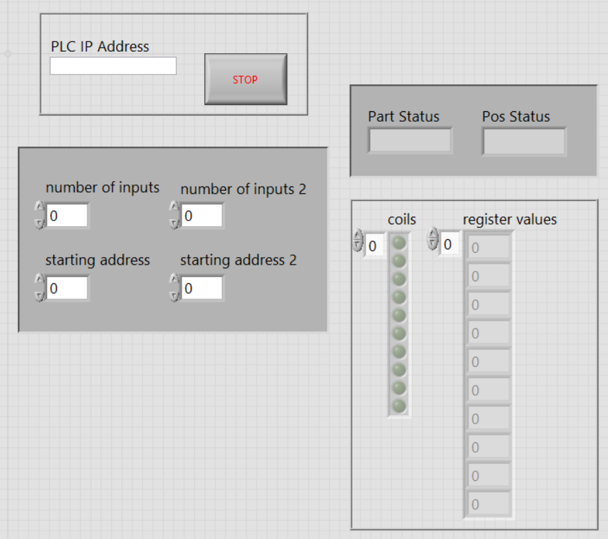
06Block Diagram
The program uses a Modbus connection that stays open while a While Loop runs. Reading from left to right:
- The PLC IP Address and a
New TCP Masterselection create the Modbus connection, which passes into the loop through a shift register together with the error wire. - A
Wait (ms)function with the constant100sets how often the loop runs. - A Modbus read function uses starting address and number of inputs to read the coils and sends them to the coils indicator.
- One coil is picked out of the array. A Select function turns it into the text
Sensed(True) orIdle(False) for Part Status. - A second Modbus read function uses starting address 2 and number of inputs 2 to read the holding registers and sends them to register values.
- One register value is picked out and compared with the constant
80. A Select function turns the result intoReachedorin-Processfor Pos Status. - The STOP button ends the loop, and a Modbus close function on the right closes the connection.
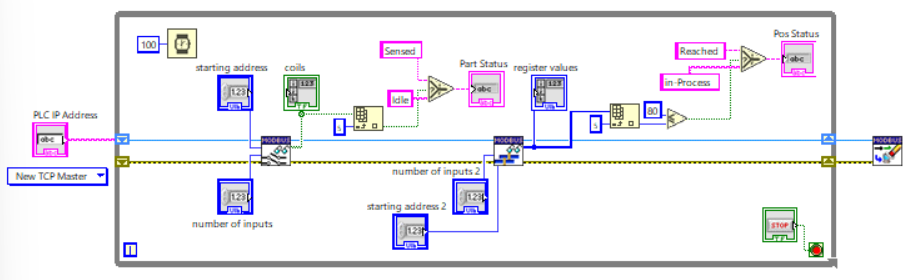
Enlarged halves of the same diagram: the first shows the connection and the coil reading, the second shows the register reading and Pos Status.
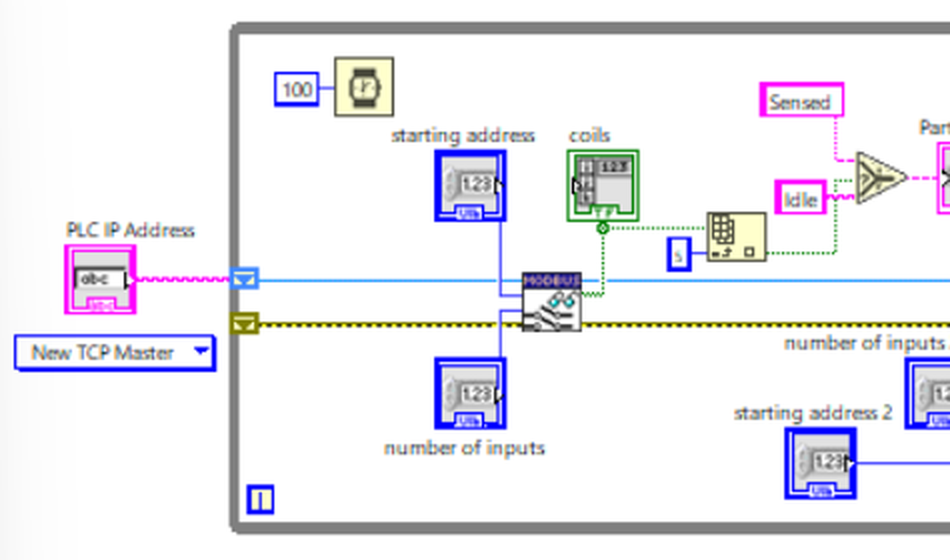
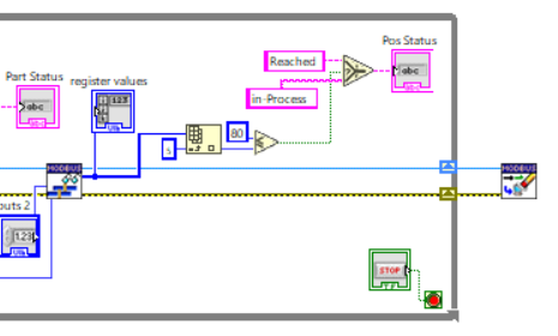
07Simulated PLC Setup
The PLC is simulated with two programs. The ICDT MODBUS TCP Server plays the PLC. It listens on port 502 and shows 64 registers and 64 coils (as light bulbs), all starting at 0.
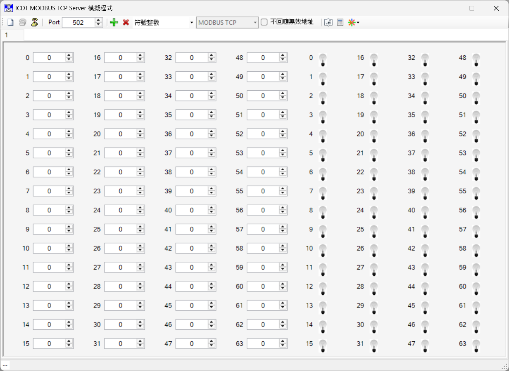
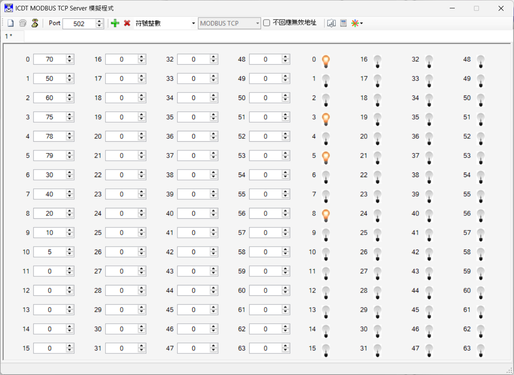
ModbusClientX is used to check that the simulator really answers over Modbus TCP. It connects to 127.0.0.1 on port 502 and reads holding registers.
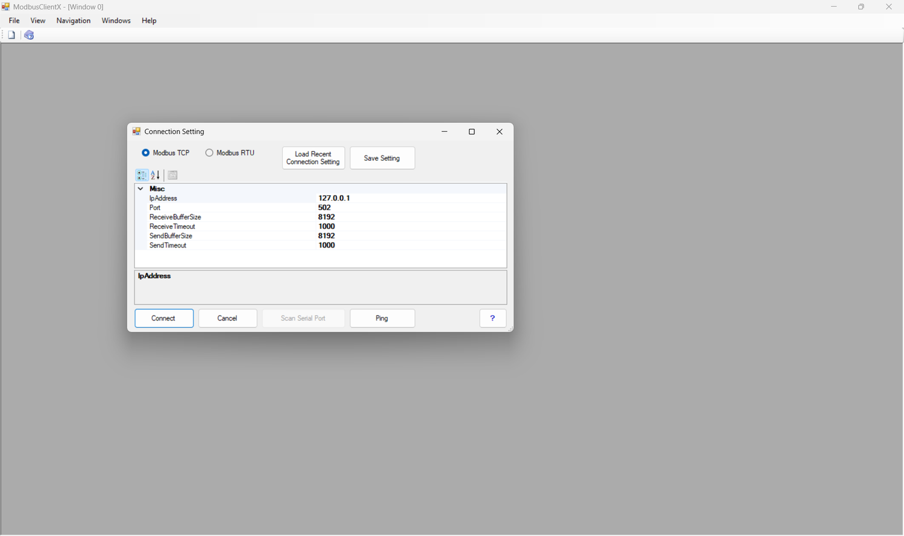
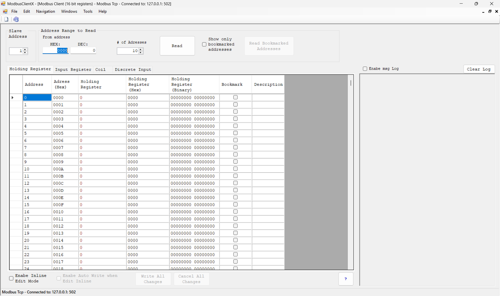
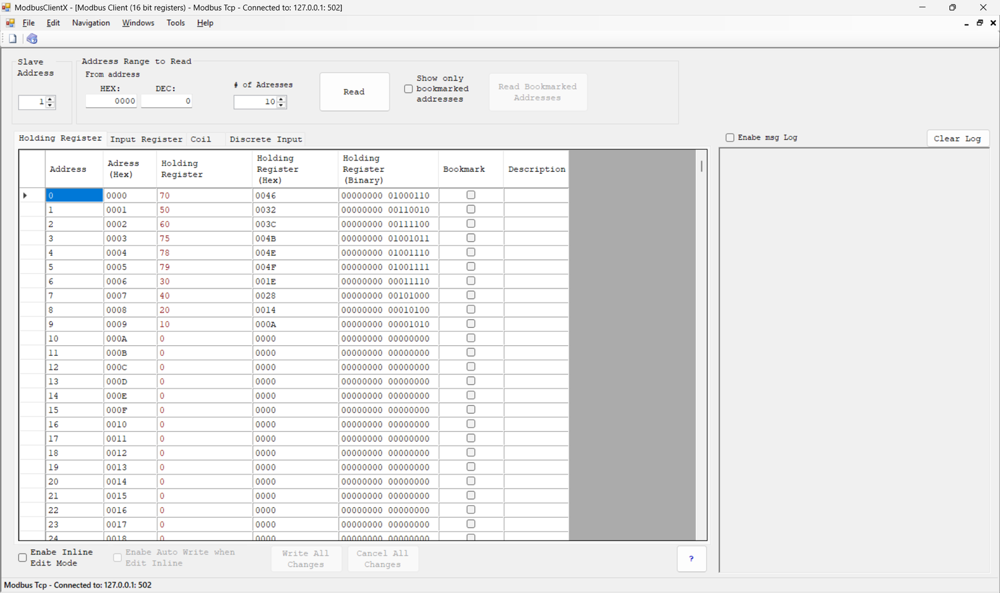
08Configuration
- Start the ICDT MODBUS TCP Server on port 502 and enter the register values and turn on the coils you want.
- Optionally check the data with ModbusClientX (Modbus TCP,
127.0.0.1, port502). - Open
Labview Assignment.lvprojand double-clickTask6.vi. - Type
127.0.0.1into PLC IP Address. - Set starting address and number of inputs for the coils, and starting address 2 and number of inputs 2 for the registers.
- Click Run. The coils, register values, Part Status and Pos Status fill in.
- Click STOP to end the program.
09Evidence
The first screenshot shows the VI in edit mode. The second is a real run connected to the simulator, with the front panel on the left and the block diagram on the right.
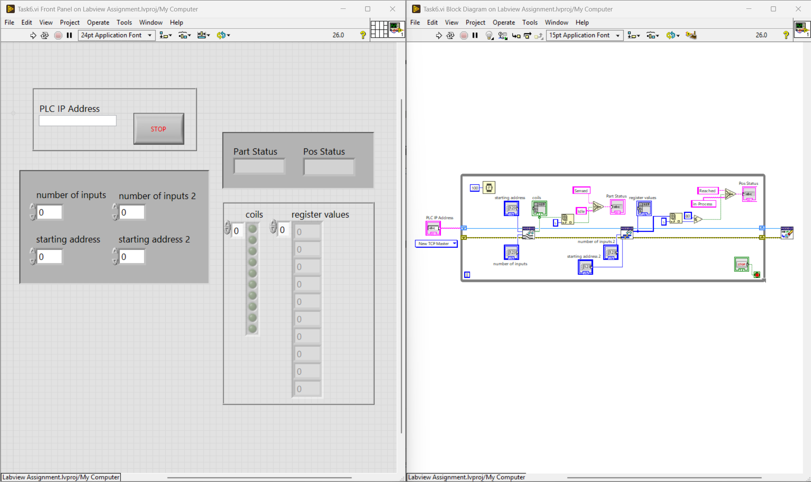
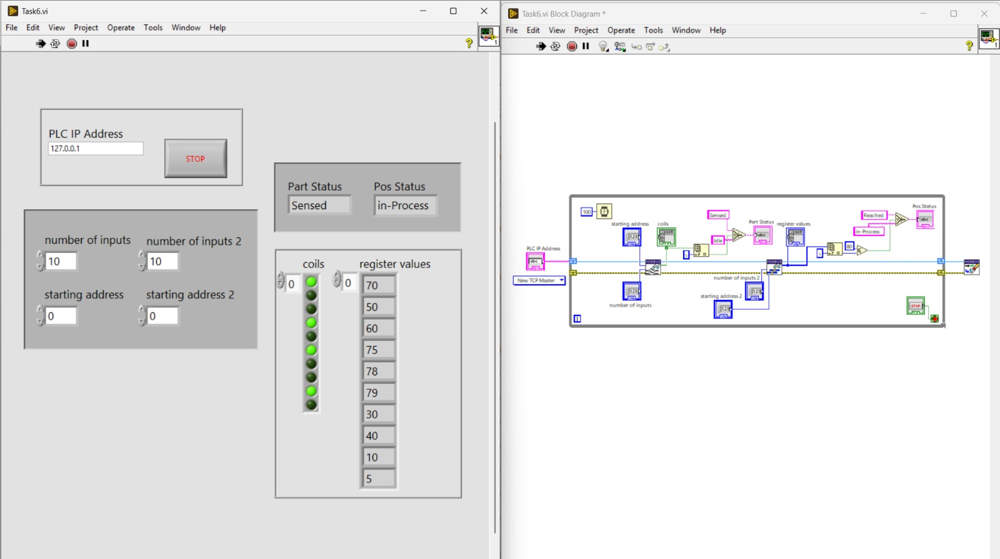
| Item | Value in the test run |
|---|---|
| PLC IP Address | 127.0.0.1 |
| number of inputs / starting address | 10 / 0 |
| number of inputs 2 / starting address 2 | 10 / 0 |
| coils on | 1st, 4th, 6th and 9th LEDs (coils 0, 3, 5 and 8) |
| register values | 70, 50, 60, 75, 78, 79, 30, 40, 10, 5 |
| Part Status | Sensed |
| Pos Status | in-Process |
10Observations
- The PLC is simulated — the address
127.0.0.1points to the same computer. With a real PLC, the IP address of the PLC is entered instead, and port 502 and the register addresses must match its program. - Only one coil and one register drive the status text — Part Status uses a single coil and Pos Status compares a single register with the fixed value 80. The other values are only displayed.
- The thresholds are fixed in the diagram — the value 80 and the picked indexes are constants, so changing them means editing the block diagram. Putting them on the front panel would make them adjustable.
- There is no error indicator — if the IP address is wrong or the server is not running, the error is not shown to the user.
- The IP address starts empty — the PLC IP Address box has to be filled in before each run.
11Reflection
This task shows how LabVIEW talks to industrial equipment. The same Modbus read functions would work with a real PLC, and using a simulator made it possible to test the whole chain on one computer. Turning raw bits and numbers into messages such as Sensed and Reached is the kind of step that makes PLC data readable to an operator.
12Project File
The VI is part of the Labview Assignment.lvproj project: Task6.vi.
Task 7 is also built as a standalone Windows application, Task7.exe (about 1434 KB), so it can run without opening the LabVIEW project. It needs the LabVIEW Run-Time Engine (64-bit) installed on the computer, and the simulated PLC (the ICDT MODBUS TCP Server) has to be running before it is started. Windows may show a security warning because the file is not digitally signed.
Other tasks
Choose Items & Done Operation
A For Loop counts up to a chosen number of items, shows the running count and lights a Done Operation LED.
TASK 2Set Temperature & Boiler Temperature
A knob sets a temperature in °C, a While Loop converts it to °F and shows it on a boiler thermometer until STOP is pressed.
TASK 3Temperature Unit Switch & SubVI
The temperature VI is extended with a Set Unit switch and a reusable SubVI that converts °C to °F.
TASK 4Arduino DHT11 Temperature & Humidity
Read DHT11 temperature and humidity from an Arduino over a VISA serial connection and show them on a thermometer and a tank.
TASK 5Waveform Chart Leveller
A Slide control sets a level that is plotted over time on a LabVIEW waveform chart until STOP is pressed.
TASK 6MPU6050 Arduino Waveform Chart
Read MPU6050 motion data from an Arduino and plot the x, y and z values live on waveform charts.
TASK 8Microphone Input & Filter
Record sound from a microphone, filter it with a lower cut-off and show the original and filtered waveforms.